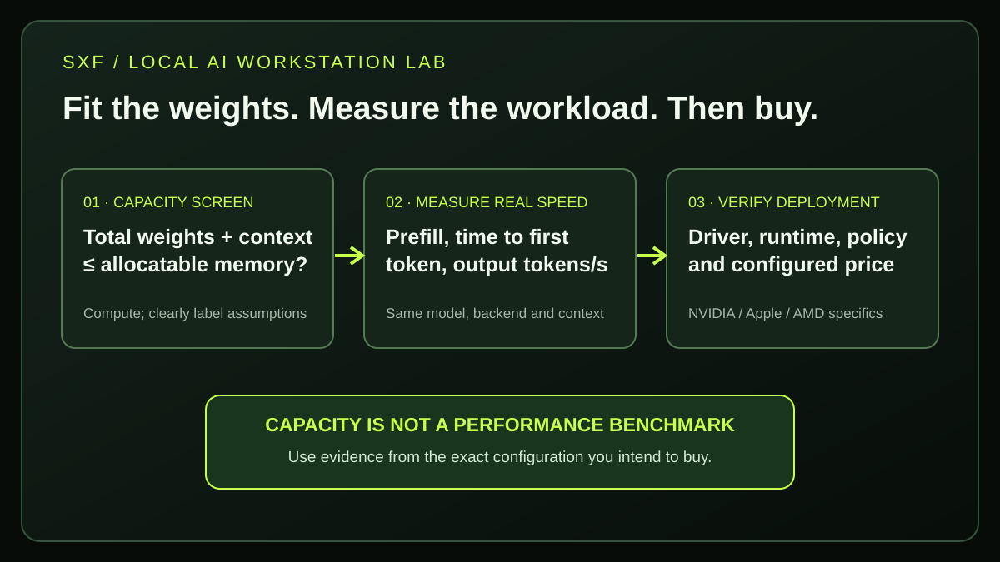

SXF / AI · ORIGINAL MEMORY-FIT RESEARCH · 2026 HARDWARE
Best Local AI Workstations (2026): NVIDIA DGX Spark vs Mac Studio M5 vs AMD Ryzen AI Max
Which computer should you actually buy to run an open-weight LLM? Compare 128GB-class machines, independently measured decoding speed, current public pricing and hardware limitations. Then use SXF's original 60-scenario model-fit screening lab—without pretending a calculation is a hardware benchmark.
DIRECT ANSWER · MODEL FIT BEFORE MARKETING
What is the best local AI workstation in 2026?
Choose an NVIDIA DGX Spark if CUDA and NVIDIA-first AI development matter; choose a Mac Studio M5 Ultra if you need a larger unified-memory ceiling and high bandwidth; choose an AMD Ryzen AI Max+ 395 PC if you prefer an x86 machine with 128GB-capable shared memory and flexible vendors. A Mac Studio M5 Max is attractive for macOS/MLX workflows, but the base 36GB configuration is not equivalent to a 128GB DGX Spark.
No universal winner: total model weights, available memory, context length, active MoE parameters, runtime and price decide the result. Independent 2026 benchmarks below are credited to their original testers, not SXF measurements.
01 · HARDWARE MATRIX
DGX Spark vs Mac Studio M5 vs Ryzen AI Max: specs that matter for local LLMs
All three platforms use shared or unified memory, but memory size and bandwidth are independent. A machine that can load a 120B-class model may still generate slowly. A base-price comparison is invalid unless you compare the same installed memory configuration.
| Workstation | Memory configuration used here | Bandwidth | Platform / local AI stack | Best reason to buy |
|---|---|---|---|---|
| NVIDIA DGX Spark | 128GB unified (64GB variant also exists) | 273GB/s | Grace Blackwell, CUDA, NVIDIA software stack | CUDA-centric AI experiments and a compact dedicated box |
| Mac Studio M5 Max | Up to 128GB; base is 36GB | 460 / 614GB/s | macOS, Apple Silicon, Metal / MLX | Mac ecosystem and strong bandwidth |
| Mac Studio M5 Ultra | 96GB base; options 256GB or 512GB | ~1.2TB/s | macOS, Metal / MLX | Memory capacity above 128GB and high bandwidth |
| Ryzen AI Max+ 395 PC | Up to 128GB; actual configuration varies | 256GB/s at LPDDR5x-8000 | Radeon 8060S, x86, Windows/Linux, ROCm or Vulkan | Flexible small-form-factor PC choices |

02 · COMMERCIAL BUYER INTENT
How much do DGX Spark, Mac Studio M5 and Ryzen AI Max workstations cost in 2026?
As listed or announced in U.S. primary sources checked November 13, 2026: Apple's Mac Studio M5 Max starts at $2,499 (36GB) and M5 Ultra at $5,499 (96GB). NVIDIA's current U.S. marketplace page displayed $6,950 for a 128GB DGX Spark, while its February 2026 notice had announced a $4,699 MSRP. AMD does not set one retail system price: 128GB models are sold by several manufacturers.
| Example purchase | Published price observed | Memory at stated price | Important caveat | Primary link |
|---|---|---|---|---|
| Mac Studio M5 Max | Starts $2,499 | 36GB | 128GB option costs more; verify live configurator | Apple ↗ |
| Mac Studio M5 Ultra | Starts $5,499 | 96GB | 256GB/512GB upgrades are separate | Apple ↗ |
| DGX Spark | $6,950 listing | 128GB | NVIDIA's February MSRP notice said $4,699; price has not been stable | NVIDIA store ↗ |
| Framework Desktop mainboard | $3,149 listed | 128GB on 395 mainboard | Board-only; not the price of a complete desktop | Framework ↗ |
| Beelink GTR9 Pro example | Manufacturer-configured price varies | 128GB / 2TB listed | Check region, taxes and current cart price | Beelink ↗ |
SXF buying rule: request a same-memory, same-storage landed price, including tax, warranty, shipping and required peripherals. A $2,499 Mac Studio M5 Max with 36GB is not a low-cost alternative for a 120B model requiring 128GB-class capacity. Likewise, a Framework motherboard is not a finished PC.
03 · THE MAIN BOTTLENECK
Is 128GB unified memory enough to run a 70B or 120B LLM locally?
For many quantized 70B and some 120B-class models, 128GB can be sufficient, but it is not a universal promise. The total stored weights must share memory with the runtime, context/KV cache, activations, operating system and concurrent sessions. Windows GPU allocation policies may differ from Linux, and Mac memory is not all guaranteed available to Metal.
Capacity ≠ bandwidth
Capacity decides whether the model and its working set can be loaded; bandwidth is one limit on output generation. A device with more RAM is not necessarily faster.
MoE ≠ tiny download
A 122B-A10B mixture-of-experts model may activate about 10B parameters per token while still needing storage and memory for a much larger total expert set.
Context costs memory
Long prompts and parallel sessions increase KV-cache and runtime needs. A model that loads at 4K tokens may fail or slow down at 64K.
For the fundamentals, see 4-bit vs 8-bit LLM quantization and KV cache and the SXF 8–32GB GPU VRAM finder. The finder covers discrete consumer GPUs; this workstation article addresses larger unified-memory purchases.
04 · ATTRIBUTED MEASUREMENTS
Which local AI workstation runs LLMs fastest in real tests?
In independent BAEM1N llama.cpp Q4_K_M runs, an M5 Max 128GB test rig exceeded the tested DGX Spark and Ryzen AI Max+ 395 systems on generation speed for four Qwen3.5 models. This is not a head-to-head benchmark of Mac Studio M5 Ultra, and the AMD rig had 96GB; we do not substitute these measurements for untested 128GB or 256GB machine configurations.
| Model / quantization | M5 Max 128GB source rig | DGX Spark 128GB | Ryzen AI Max 395 96GB rig |
|---|---|---|---|
| Qwen3.5 9B, Q4_K_M | 75.9 | 36.8 | 32.6 |
| Qwen3.5 27B, Q4_K_M | 24.8 | 11.5 | 10.3 |
| Qwen3.5 35B-A3B, Q4_K_M | 94.1 | 59.6 | 58.0 |
| Qwen3.5 122B-A10B, Q4_K_M | 42.9 | 21.7 | 22.9 |
See the original independent benchmark and methodology ↗ and download SXF's clearly attributed comparison extract. Quoted values are not normalized by system price, operating system, prompt speed, total ownership cost or workload fit; the experiment includes multiple runtimes, and these rows use one consistent backend.
Why can a sparse MoE model generate faster than a smaller dense model?
In that published series, Qwen3.5 35B-A3B generated at 94.1 tok/s on the M5 Max rig, compared with 75.9 tok/s for the smaller Qwen3.5 9B dense model. This does not imply a 35B download fits into a 9B's memory footprint. The active-parameter count changes the per-token computation; the total model parameters still matter for resident weight storage.
Why are long-prompt and parallel benchmarks different?
Decode tokens/second is only one user experience dimension. Long system prompts, RAG contexts and coding agents need prompt-prefill throughput, time-to-first-token and parallel-user performance. Those change by model, backend, precision and software release. NVIDIA's own DGX Spark GPT-OSS-120B figure (55.37 output tok/s in its documented setup) is an official vendor measurement, not directly comparable to the independent Qwen3.5 rows. NVIDIA benchmark methods ↗.
05 · SXF ORIGINAL REPRODUCIBLE ANALYSIS
SXF Local AI Workstation Fit Lab: which models fit 64GB, 128GB or 256GB?
Our original 60-scenario deterministic screen estimates the memory required by five example model sizes, three precision classes and four workstation memory configurations. It separates total parameters from active MoE parameters and labels borderline cases. It does not measure physical GPUs, predict tokens/second, calculate an exact KV cache, validate model license or guarantee runtime compatibility.
OFFLINE · NO TRACKING · ALL ASSUMPTIONS VISIBLE
Choose a workstation and model
Change a configuration to estimate its indicative memory budget. The percentage is a deliberately adjustable assumption, not guaranteed available GPU memory.
Default share: 80% DGX, 75% Mac M5 Max, 80% M5 Ultra, 70% AMD. These are SXF screening assumptions, not platform specifications. You can revise them after observing your actual memory availability.
Indicative fit only. Confirm the exact quantized file, runtime and context before buying.
MoE active parameters are not subtracted from the resident model-weight estimate.
Calculation: total parameters × nominal bits/8 × 1.10 weight overhead + user-selected context/runtime reserve. Estimated pool = installed unified memory × user-selected allocation %. Compare the two; margins below 10% of the assumed pool are labeled borderline. Decimal GB, not GiB; real GGUF formats vary. This is a planning tool, not a performance claim.
How was the SXF 60-scenario matrix produced?
Four memory configurations × five example total-parameter counts × three precision assumptions = 60 deterministic rows. The source file includes the input fractions, total/active model parameters, quantization assumption, derived weights, reserve and headroom result. Download every computed row ↗; download the standard-library Python reproduction ↗; and inspect the methodological limitations ↗. An independent third-party speed result is kept in a separate attributed CSV to avoid mixing SXF analysis with hardware testing.
06 · NVIDIA / CUDA WORKFLOW
Is NVIDIA DGX Spark worth buying for local LLMs in 2026?
DGX Spark is attractive when the project depends on NVIDIA CUDA, a GB10 Grace Blackwell system, NVIDIA-first AI tooling, or a dedicated desktop inference appliance. The published 128GB design offers 273GB/s memory bandwidth; a newer 64GB variant should not be confused with the 128GB configuration in this guide.
Its headline “up to 1 PFLOP FP4” is a peak arithmetic specification, not a 70B model's measured token speed. A sparse MoE model can show much higher generation performance than a dense model of similar total parameter count. Check precision support and exact runtime flags. Some CUDA containers assume x86_64 and may need ARM-compatible images or changes on the GB10's Arm CPU. For production rollout, also review network security, management, support and software versions.
Price reality: the NVIDIA U.S. product listing ↗ displayed $6,950 for a 128GB Spark during this review, while a February 2026 NVIDIA notice ↗ documented the earlier $4,699 MSRP. A time-stamped shopping quote is essential.
07 · APPLE / METAL WORKFLOW
Is Mac Studio M5 Ultra better than DGX Spark for running LLMs locally?
A configured Mac Studio M5 Ultra can provide more unified memory (up to 512GB) and substantially more memory bandwidth (~1.2TB/s) than a 128GB DGX Spark. That makes it compelling for large resident models and macOS/MLX workflows—but bandwidth alone does not guarantee faster prompt-prefill or multi-user serving for every model.
In 2026 Apple introduced the M5 Max and M5 Ultra Mac Studio. Do not evaluate the old M3 Ultra as though it is the new release. M5 Max begins at 36GB with a 460GB/s base variant; the 40-core GPU configuration provides 614GB/s and can be configured with 128GB. M5 Ultra begins at 96GB and is configurable to 256GB or 512GB on applicable variants. These options can change the actual purchase cost substantially.
Metal/MLX performance, quantized-format availability, model loader, thermal behavior and supported toolchains matter. Docker/VLLM CUDA recipes for NVIDIA are not automatically interchangeable with MLX. The independent comparison table above contains an M5 Max test rig, not a measured 256GB or 512GB M5 Ultra test.
Verify current Apple M5 Mac Studio specifications ↗ and base model pricing ↗.
08 · AMD / X86 WORKFLOW
Is AMD Ryzen AI Max+ 395 a cheaper alternative to DGX Spark?
A Ryzen AI Max+ 395 workstation can be an attractive x86 alternative with configurations up to 128GB unified LPDDR5x memory and roughly 256GB/s bandwidth at 8000MT/s. But “AMD Ryzen AI Max+ 395” is a processor, not one retail desktop; prices, cooling, SSD, OS and available RAM depend on the OEM.
Examples include the Framework Desktop platform, HP Z2 Mini G1a and Beelink GTR9 Pro. The Framework 128GB mainboard listing ↗ showed $3,149 for a mainboard—not a finished desktop. The Beelink 128GB GTR9 Pro ↗ is a complete example, while HP's enterprise SKU can differ radically in price. Do not treat one price as AMD's MSRP.
ROCm and Vulkan backend support must be verified against the exact GPU driver, OS and runtime version. A Linux ROCm demonstration does not guarantee the same acceleration on Windows, and shared system memory is not equivalent to a fixed 128GB of dedicated GPU VRAM. Prefer real tests on the precise workstation configuration being purchased.
09 · MODEL-SELECTION INTENT
Which local LLM models fit best on 64GB, 128GB and 256GB workstations?
For smaller 9B–27B quantized models, many less-expensive GPUs and computers are adequate; buying a 128GB specialist box can be unnecessary. Larger dense 70B systems and 120B-class MoE weights are where unified-memory capacity becomes more relevant. A 235B-total-parameter model may require a 256GB-class machine or multi-device strategy depending on its actual quantized artifact.
| Model class | Typical local decision | Watch out for |
|---|---|---|
| 9B dense | Use existing 8–16GB VRAM capable hardware before buying a workstation | Backend compatibility and context cache |
| 27B dense | Consider a 24–48GB GPU or 64GB+ unified-memory system | 4-bit vs 8-bit changes fit |
| 35B-A3B MoE | Capacity comparable to its total 35B; generation depends on active experts | Do not equate 3B active with a 3B model download |
| 70B dense / 122B-A10B MoE | 128GB unified memory offers planning room with appropriate quantization | Large context, extra sessions and OS memory |
| 235B-total MoE | Start with 256GB+ planning or a distributed setup | Model storage, runtime sharding and disk throughput |
Compare potential models and commercial licenses using SXF's best open-source AI models reference and commercial model licensing guide before budgeting a machine around a model that you cannot legally or technically deploy.
10 · SOFTWARE COMPATIBILITY
Should you use Ollama, LM Studio, MLX, llama.cpp or vLLM on a local AI workstation?
For a first local prototype, use Ollama or LM Studio on a supported machine; for source-backed cross-platform performance studies, control the version and flags of llama.cpp; for Mac-native workflows consider MLX; and for NVIDIA-focused multi-user serving, verify vLLM deployment support. A runtime choice can change observed performance as much as the hardware name.
Developer workstation
Ollama or LM Studio gets models running with less setup; test the actual memory pool and context limits.
Apple-native
MLX supports Apple Silicon workflows; do not carry CUDA benchmarks across to Metal without fresh measurements.
CUDA serving
vLLM, TensorRT-LLM or optimized llama.cpp may be appropriate for NVIDIA; check GB10 Arm container compatibility.
Follow SXF's run AI models locally setup guide for installation and the open-weight LLM hosting comparison if workloads have many simultaneous users and a remote GPU could be a better economic choice.
11 · BUYER'S CHECKLIST
What should you verify before purchasing a local LLM workstation?
Buy for the exact workload and quantized model file, not for the largest TOPS number. Require a like-for-like benchmark with specified model, file hash, context, backend, OS, batch size, measured wall power and long-prompt behavior before treating speed claims as comparable.
- Record model weights: include total parameters and actual downloaded GGUF/safetensors size, not just active MoE count.
- Estimate context and concurrency: measure or reserve realistic KV cache and runtime overhead.
- Verify available memory: test the OS/driver allocation actually accessible to GPU execution.
- Check two speeds: prefill/TTFT and generation tokens per second, with the same quantization and prompt.
- Verify ecosystem: CUDA and Arm on Spark, Metal/MLX on Mac, ROCm/Vulkan/OS support on AMD.
- Request a configured price: match 128GB with 128GB (or 256GB with 256GB), including SSD and tax.
- Calculate operational economics: idle power, maintenance, support, software licenses and useful model coverage.
- Document data handling: local inference reduces some transmission risks, but local machines still need access control and backups.
When should you choose a cloud GPU instead? If workload volume is sporadic, the target model changes often, or multiple concurrent users need high throughput, compare the cost of a hosted GPU API before purchasing hardware. Our AI agent economics guide covers a broader cost-per-accepted-outcome perspective.
12 · SEARCH QUESTIONS
Local AI workstation FAQ: practical answers for 2026
Is DGX Spark faster than Mac Studio M5 Ultra for LLMs?
There is no universal answer without matching the model, quantization, runtime, context and batch size. M5 Ultra offers higher specified memory bandwidth, but the independent Qwen3.5 rows in this guide tested an M5 Max system—not M5 Ultra. CUDA-specific prefill and vendor optimization can change the result.
Can a 128GB local AI PC run a 120B model?
Some quantized 120B-class weight sets may fit within a 128GB configuration, especially sparse MoE models. You still need context cache, runtime overhead and appropriate backend support. Run the SXF estimator as a screening step and confirm the exact artifact in practice.
Does a 128GB Ryzen AI Max PC have 128GB of VRAM?
No. It has up to 128GB of shared system RAM. How much can be allocated or accessed for a particular GPU runtime depends on OS, drivers and application. Do not equate it with 128GB of dedicated discrete VRAM.
Is Mac Studio M5 Max 128GB worth it for Ollama?
The 128GB upgrade can support larger on-device weights, but the $2,499 base price is for a 36GB configuration. Check live Apple upgrade pricing and compare Ollama with MLX on your actual chosen models.
Should I buy DGX Spark 64GB or 128GB?
Choose the memory tier based on the exact file and realistic context. The 64GB variant should not inherit conclusions drawn from benchmarks or fitting tests on the 128GB model. Verify bandwidth and official SKU details separately.
How much RAM do I need to run a local LLM?
It depends on total parameter count, quantization, model architecture, context, active GPU allocation and concurrent users. A 9B quantized model often needs far less than 64GB; larger 70B and 120B-class workloads may justify 128GB, while 235B-total-class weights may require 256GB or more.
What is the best local AI workstation for a small business?
For a small business, prioritize the smallest configuration that meets data-residency rules, reliable model fit, acceptable response speed and support needs. A flexible AMD x86 PC, a managed Mac Studio or an NVIDIA CUDA box can each be the best choice for different internal applications.
Are these 2026 benchmarks measured by SXF?
No. BAEM1N published the cited cross-platform measurements and the vendor figures are labeled as vendor figures. SXF's own contribution here is a transparent deterministic memory-capacity screen, its reproducible dataset and its decision framework—not hands-on device speed measurements.
13 · EVIDENCE AND LIMITATIONS
How did SXF research the best local AI workstations for 2026?
SXF checked first-party hardware documentation and current public listing pages on , compared an attributable independent benchmark, and constructed a deterministic capacity-screening dataset. It did not purchase, operate or measure these workstations in a controlled SXF lab. We do not claim any vendor-sponsored placement or guaranteed Google ranking.
Selection was informed by owner-supplied Google Search Console queries including local llm, quantized llm vram and what hardware works best with open-source ai tools and frameworks. Observed impressions were used to prioritize question coverage, not misrepresented as monthly search demand.
Primary technical sources and attributed performance evidence
- NVIDIA DGX Spark specifications ↗
- NVIDIA DGX Spark live U.S. product listing ↗
- NVIDIA February 2026 MSRP notice ↗
- NVIDIA gpt-oss benchmark (vendor conducted) ↗
- Apple 2026 Mac Studio specifications ↗
- Apple 2026 Mac Studio release pricing ↗
- AMD Ryzen AI Max+ 395 specifications ↗
- AMD Ryzen AI Halo workstation configurations ↗
- Framework Desktop reference and entry tiers ↗
- Framework 128GB mainboard price — not complete PC ↗
- Beelink GTR9 Pro 128GB product listing ↗
- BAEM1N independent cross-platform llama.cpp methodology ↗
- StorageReview independently tested workstation choices ↗
- Google Search Central Article guidance ↗
All links are informational. No affiliate links or paid placement. Product prices and stock change; quotes must be reconfirmed. SXF's model screen makes illustrative assumptions about weight overhead and allocatable memory, and does not model exact KV cache, sparsity layouts, CPU offload or runtime compatibility. Read the SXF editorial method ↗.